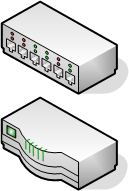
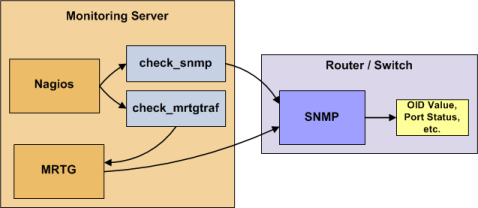

Up To: Contents
Up To: Contents
 See Also: Monitoring Publicly Available Services
See Also: Monitoring Publicly Available Services
Introduction
This document describes how you can monitor the status of network switches and routers. Some cheaper "unmanaged" switches and hubs don't have IP addresses and are essentially invisible on your network, so there's not any way to monitor them. More expensive switches and routers have addresses assigned to them and can be monitored by pinging them or using SNMP to query status information.
I'll describe how you can monitor the following things on managed switches, hubs, and routers:
 Note: These instructions assume that you've installed Nagios according to the quickstart guide. The sample configuration entries below reference objects that are defined in the sample config files (commands.cfg, templates.cfg, etc.) that are installed when you follow the quickstart.
Note: These instructions assume that you've installed Nagios according to the quickstart guide. The sample configuration entries below reference objects that are defined in the sample config files (commands.cfg, templates.cfg, etc.) that are installed when you follow the quickstart.
Overview
Monitoring switches and routers can either be easy or more involved - depending on what equipment you have and what you want to monitor. As they are critical infrastructure components, you'll no doubt want to monitor them in at least some basic manner.
Switches and routers can be monitored easily by "pinging" them to determine packet loss, RTA, etc. If your switch supports SNMP, you can monitor port status, etc. with the check_snmp plugin and bandwidth (if you're using MRTG) with the check_mrtgtraf plugin.
The check_snmp plugin will only get compiled and installed if you have the net-snmp and net-snmp-utils packages installed on your system. Make sure the plugin exists in /usr/local/nagios/libexec before you continue. If it doesn't, install net-snmp and net-snmp-utils and recompile/reinstall the Nagios plugins.
Steps
There are several steps you'll need to follow in order to monitor a new router or switch. They are:
What's Already Done For You
To make your life a bit easier, a few configuration tasks have already been done for you:
The above-mentioned config files can be found in the /usr/local/nagios/etc/objects/ directory. You can modify the definitions in these and other definitions to suit your needs better if you'd like. However, I'd recommend waiting until you're more familiar with configuring Nagios before doing so. For the time being, just follow the directions outlined below and you'll be monitoring your network routers/switches in no time.
Prerequisites
The first time you configure Nagios to monitor a network switch, you'll need to do a bit of extra work. Remember, you only need to do this for the *first* switch you monitor.
Edit the main Nagios config file.
vi /usr/local/nagios/etc/nagios.cfg
Remove the leading pound (#) sign from the following line in the main configuration file:
#cfg_file=/usr/local/nagios/etc/objects/switch.cfg
Save the file and exit.
What did you just do? You told Nagios to look to the /usr/local/nagios/etc/objects/switch.cfg to find additional object definitions. That's where you'll be adding host and service definitions for routers and switches. That configuration file already contains some sample host, hostgroup, and service definitions. For the *first* router/switch you monitor, you can simply modify the sample host and service definitions in that file, rather than creating new ones.
Configuring Nagios
You'll need to create some object definitions in order to monitor a new router/switch.
Open the switch.cfg file for editing.
vi /usr/local/nagios/etc/objects/switch.cfg
Add a new host definition for the switch that you're going to monitor. If this is the *first* switch you're monitoring, you can simply modify the sample host definition in switch.cfg. Change the host_name, alias, and address fields to appropriate values for the switch.
define host{
use generic-switch ; Inherit default values from a template
host_name linksys-srw224p ; The name we're giving to this switch
alias Linksys SRW224P Switch ; A longer name associated with the switch
address 192.168.1.253 ; IP address of the switch
hostgroups allhosts,switches ; Host groups this switch is associated with
}
Monitoring Services
Now you can add some service definitions (to the same configuration file) to monitor different aspects of the switch. If this is the *first* switch you're monitoring, you can simply modify the sample service definition in switch.cfg.
Note: Replace "linksys-srw224p" in the example definitions below with the name you specified in the host_name directive of the host definition you just added.
Monitoring Packet Loss and RTA
Add the following service definition in order to monitor packet loss and round trip average between the Nagios host and the switch every 5 minutes under normal conditions.
define service{
use generic-service ; Inherit values from a template
host_name linksys-srw224p ; The name of the host the service is associated with
service_description PING ; The service description
check_command check_ping!200.0,20%!600.0,60% ; The command used to monitor the service
normal_check_interval 5 ; Check the service every 5 minutes under normal conditions
retry_check_interval 1 ; Re-check the service every minute until its final/hard state is determined
}
This service will be:
Monitoring SNMP Status Information
If your switch or router supports SNMP, you can monitor a lot of information by using the check_snmp plugin. If it doesn't, skip this section.
Add the following service definition to monitor the uptime of the switch.
define service{
use generic-service ; Inherit values from a template
host_name linksys-srw224p
service_description Uptime
check_command check_snmp!-C public -o sysUpTime.0
}
In the check_command directive of the service definition above, the "-C public" tells the plugin that the SNMP community name to be used is "public" and the "-o sysUpTime.0" indicates which OID should be checked.
If you want to ensure that a specific port/interface on the switch is in an up state, you could add a service definition like this:
define service{
use generic-service ; Inherit values from a template
host_name linksys-srw224p
service_description Port 1 Link Status
check_command check_snmp!-C public -o ifOperStatus.1 -r 1 -m RFC1213-MIB
}
In the example above, the "-o ifOperStatus.1" refers to the OID for the operational status of port 1 on the switch. The "-r 1" option tells the check_snmp plugin to return an OK state if "1" is found in the SNMP result (1 indicates an "up" state on the port) and CRITICAL if it isn't found. The "-m RFC1213-MIB" is optional and tells the check_snmp plugin to only load the "RFC1213-MIB" instead of every single MIB that's installed on your system, which can help speed things up.
That's it for the SNMP monitoring example. There are a million things that can be monitored via SNMP, so its up to you to decide what you need and want to monitor. Good luck!
 Tip: You can usually find the OIDs that can be monitored on a switch by running the following command (replace 192.168.1.253 with the IP address of the switch):
snmpwalk -v1 -c public 192.168.1.253 -m ALL .1
Tip: You can usually find the OIDs that can be monitored on a switch by running the following command (replace 192.168.1.253 with the IP address of the switch):
snmpwalk -v1 -c public 192.168.1.253 -m ALL .1
Monitoring Bandwidth / Traffic Rate
If you're monitoring bandwidth usage on your switches or routers using MRTG, you can have Nagios alert you when traffic rates exceed thresholds you specify. The check_mrtgtraf plugin (which is included in the Nagios plugins distribution) allows you to do this.
You'll need to let the check_mrtgtraf plugin know what log file the MRTG data is being stored in, along with thresholds, etc. In my example, I'm monitoring one of the ports on a Linksys switch. The MRTG log file is stored in /var/lib/mrtg/192.168.1.253_1.log. Here's the service definition I use to monitor the bandwidth data that's stored in the log file...
define service{
use generic-service ; Inherit values from a template
host_name linksys-srw224p
service_description Port 1 Bandwidth Usage
check_command check_local_mrtgtraf!/var/lib/mrtg/192.168.1.253_1.log!AVG!1000000,2000000!5000000,5000000!10
}
In the example above, the "/var/lib/mrtg/192.168.1.253_1.log" option that gets passed to the check_local_mrtgtraf command tells the plugin which MRTG log file to read from. The "AVG" option tells it that it should use average bandwidth statistics. The "1000000,2000000" options are the warning thresholds (in bytes) for incoming traffic rates. The "5000000,5000000" are critical thresholds (in bytes) for outgoing traffic rates. The "10" option causes the plugin to return a CRITICAL state if the MRTG log file is older than 10 minutes (it should be updated every 5 minutes).
Save the file.
Restarting Nagios
Once you've added the new host and service definitions to the switch.cfg file, you're ready to start monitoring the router/switch. To do this, you'll need to verify your configuration and restart Nagios.
If the verification process produces any errors messages, fix your configuration file before continuing. Make sure that you don't (re)start Nagios until the verification process completes without any errors!